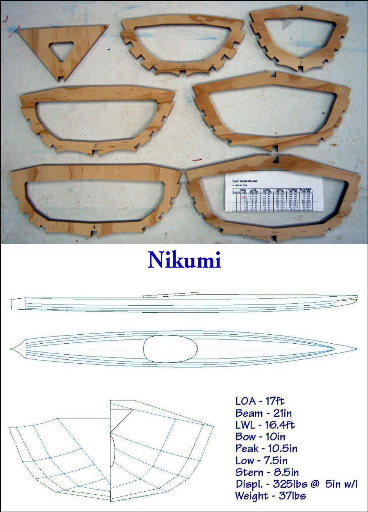

| Nikumi (Wood Frame Baidarka) | Menu Last Page Next Page |
|

The "Nikumi" Iqyax is a wood frame multi-chine Baidarka. The non-folder construction will be similar to the wood frame "Sea Rider". The skin will be either clear unsupported Vinyl like the wood frame Sea Rider or polyester core / PVC. The deck profile aft is a raised flat surface similar to the Sea Tour-R kayaks. This will allow greater storage than a flat gunwale height aft deck and will be useful for entry / exit and rolling. The forward deck is a single stringer Aleut style deckridge. The aft deckridge and the notches for cross section 7 will be added when the frame is on the strongback. Detailed instructions for both the wood frame "Nikumi" and "Sea Rider" will be added to the manual soon.
|
|